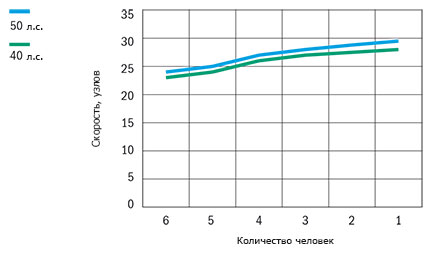

Катер Buster L (Бустер L)
Самая популярная модель лодок в Скандинавских странах на протяжении многих лет. Катер Buster L (Бустер L) – неизменно популярная модель семейства Buster на протяжении многих лет. Благодаря комфортабельности и многофункциональности это отличный компаньон для полноценного отдыха на воде и для увлечений водными видами спорта. Просторная и экономичная Buster L (Бустер L) гарантирует удовольствие от вождения в жёстких условиях эксплуатации, благодаря лёгкой управляемости и увеличенной высоты внутреннего борта. В модели Buster L (Бустер L) есть всё, что можно только пожелать от моторной лодки.
Buster L (Бустер L) это две различные модели, соединённые в одном корпусе. Модель поставляется с одной и двумя консолями. На лодке, оснащённой одной консолью, больше места для рыбалки и перевозки грузов. Путешествие на модели с двумя консолями, приятно в любую погоду, благодаря двери между консолями, дополнительное оборудование, которая надёжно защищает путешественников от ветра и брызг. Окрашенный борт обеспечивает лодке эксклюзивный дизайн и имеет три различных варианта цвета.
При проектировании моделей Buster особое внимание уделено трансформируемости моделей
с учётом потребностей владельца. Buster L (Бустер L) – не исключение. Благодаря съёмным сиденьям-боксам, лодка легко преобразуется в спортивный прогулочный катер, рабочую лошадь или надёжную, непотопляемую лодку для походов выходного дня. На модель с одной консолью легко установить вторую консоль. Консоли надёжно закрывают от ветра. Практичный тент повышает комфорт и защищает трёх путешественников со всем багажом в любую погоду.
Технические характеристики катера:
| Параметр | Buster L |
|
Длина |
5.04 м |
|
Ширина |
1.98 м |
|
Масса (Без двигателя) |
340кг(L1)/370кг(L2) |
|
Вместимость |
6 человек |
|
Рекоменд. мощность двигателя |
30 - 50 л.с. |
|
Осадка при полной нагрузке |
0,29 м |
|
Максимальная скорость |
29 узлов |
|
V-угол дна |
16° |
| График скорости | |
|  | |
Стандартное оборудование:
- Рулевое управление
- Консоль управления, ветровое стекло
- Консоль левая, ветровое стекло (L2)
- Закрывающиеся багажные отсеки (система запирания замков одним ключом)
- Сиденье-бокс 45 л. (L1-1 шт. / L2-2 шт.)
- Забортный трап
- Огнетушитель
- Чехол для аккумулятора
- Центральный выключатель с автоматическими предохранителями
- Автоматическая трюмная помпа
- Навигационные огни
- Мачта, съёмная
- Электрический разъём 12V
- Самоосушающийся кокпит
Дополнительное оборудование:
- Комплект мягких подушек
- Тент на корму, с защитным чехлом (L2)
- Тент стояночный (L2)
- Штанга для буксировки вейкбордиста
- Консоль левая, ветровое стекло (L1)
- Стационарная дверь между консолями
- Сиденье-бокс 45 л.
- Боковое сиденье
- Носовой релинг, правый
- Подставка для установки дополнительного мотора
- Подставка для крепления датчика эхолота
- Компас
- Система запирания(трос, замки Abloy, система запирания одним ключом)
- Мягкая подушка, заднее сиденье
- Мягкая подушка, спинка заднего сиденья
- Мягкая подушка, сиденье-бокс, 45 л.
- Мягкая подушка, боковое сиденье
- NAVI 5*
- Comfort*
- Canvas (L2)*
*Дополнительные опции устанавливаемые на заводе-изготовителе
NAVI 5: Картплоттер Garmin 526s, Компас Silva C58, Датчик эхолота с креплением
Comfort: Подушки спинки заднего сиденья, заднего сиденья и сиденья/бокса
Canvas: Ходовой тент с ящиком для хранения и дверью между консолями
{kind=link}
{kind=link}
{kind=link}
{kind=link}
{kind=link}
{kind=link}
{kind=link}
{kind=link}
{kind=link}